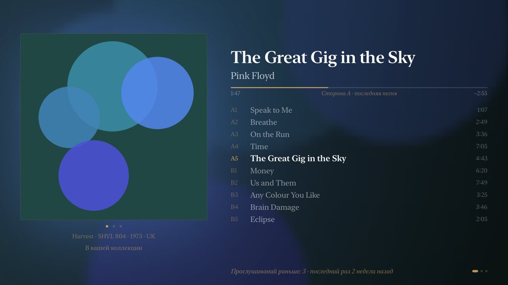
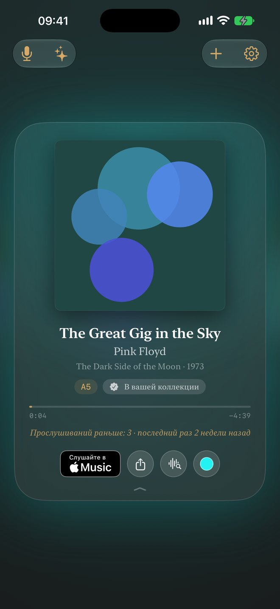
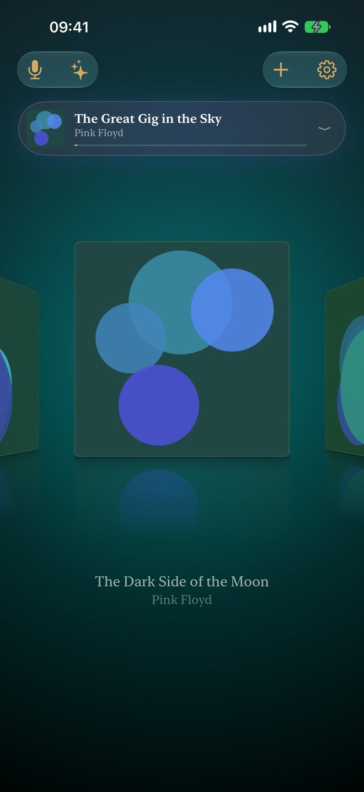
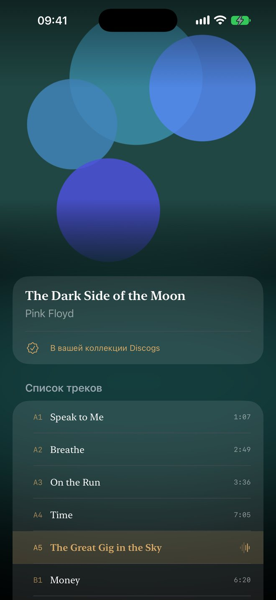
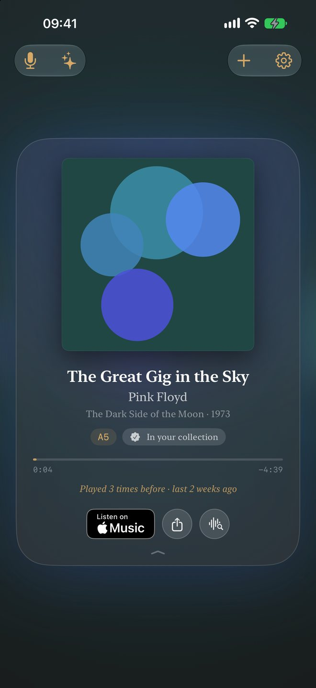
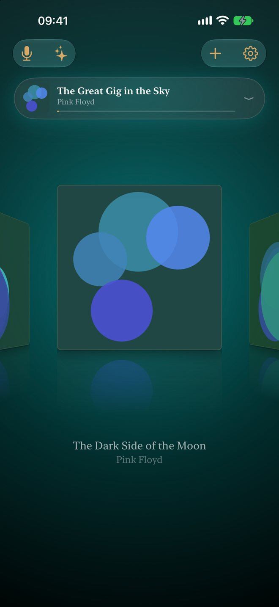
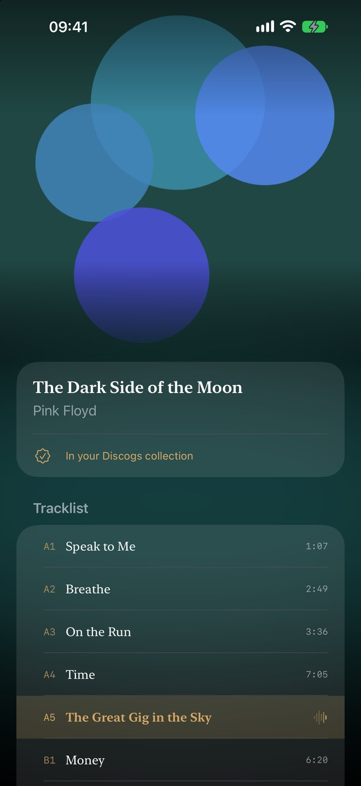

CoverCast
Now Playing для винила.
- iPhone
- iPad
- Apple TV
- Android TV
- любой браузер в вашей сети
Поставьте пластинку. CoverCast услышит её, узнает трек и покажет конверт на телевизоре — крупно, спокойно, как сам предмет. Телефон остаётся в кармане.

Подставка для играющей пластинки
Это цифровая версия деревянных подставок NOW PLAYING, только вместо подставки — телевизор. Откройте CoverCast на Apple TV или Android TV, и конверт останется на экране всю сторону. Нет приставки — пластинку покажет любой браузер в вашей сети Wi-Fi.
Пульт телевизора «переворачивает» пластинку: листает фотографии издания, показывает сведения об альбоме и тех, кто его записал.



Ваша полка
На главном экране медленно проплывает коллекция, один конверт повёрнут к вам. Подключите Discogs — и это настоящая полка: оценки, состояние, то самое издание, что стоит у вас. По ней CoverCast отличает вашу пластинку от сборника с той же песней.
Что вы слушали
У каждой пластинки своя история прослушиваний, вечер за вечером. Итоги года, время иглы, пластинки, которые давно не играли, и те, что есть, но ни разу не звучали.
И ещё
- Напоминание перевернуть пластинку, когда сторона закончилась.
- Live Activity и Dynamic Island с конвертом и треком.
- Лампы в комнате в цвете пластинки (HomeKit).
- Редкие пластинки, которых не знает Shazam, можно «научить».
- Штрихкод на конверте добавляет пластинку в коллекцию.
CoverCast слушает только пока играет музыка; звук не записывается и никуда не отправляется.
CoverCast
Now Playing for vinyl.
- iPhone
- iPad
- Apple TV
- Android TV
- any browser on your network
Put a record on. CoverCast hears it, recognises the track and shows the sleeve on your television — large, still and lit like the object it is. The phone stays in your pocket.
A stand for the record that is playing
It is a digital version of those wooden NOW PLAYING sleeve stands, with the television standing in for the stand. Open CoverCast on an Apple TV or an Android TV and the sleeve stays up for the whole side. No box under the television? Any browser on your Wi-Fi can show the record too.
The television's remote turns the record over: it leafs through photographs of the pressing, and shows what the album is and who made it.



Your shelf
Your collection drifts past on the home screen, one sleeve turned to face you. Connect Discogs and it is your real shelf — ratings, conditions, the exact pressing you own — and CoverCast uses it to tell your copy from a compilation that happens to carry the same song.
What you played
Every record keeps its own listening history, sitting by sitting. The year in review, needle time, the records you have not played in a while and the ones you own and have never heard.
And more
- A reminder to turn the record over when a side ends.
- Live Activity and Dynamic Island with the sleeve and the track.
- Room lamps in the colour of the record (HomeKit).
- Teach CoverCast rare records Shazam does not know.
- Scan a sleeve's barcode to add the record to your collection.
CoverCast listens only while music plays; nothing it hears is recorded or sent anywhere.